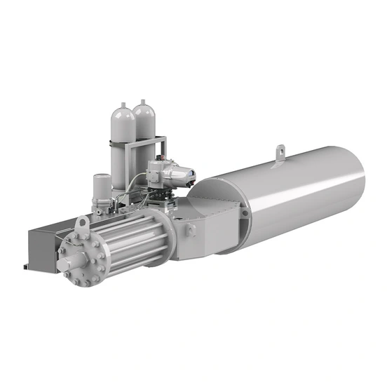

SI3 và SI4 là hai nhóm actuator quarter-turn trong dòng Skilmatic SI của Rotork, cùng dùng cơ cấu spring-return điện-thủy lực nhưng khác nhau về dải torque, khả năng tùy chỉnh và cấp bảo vệ. Bài viết so sánh hai nhóm theo nguồn tài liệu hiện hành, không kết luận SI4 luôn thay thế SI3 mà đưa điều kiện cụ thể để chọn đúng nhóm.

Trả lời nhanh
- SI3: torque 75–36.000 Nm, spring-return tiêu chuẩn, cụm hoàn chỉnh watertight tới IP66/IP67.
- SI4: torque 2.000–200.000 Nm, có thể tùy chỉnh sâu, hỗ trợ accumulator, cụm hoàn chỉnh watertight tới IP65.
- Cả hai dùng chung control module IP66/68 (7 m/72 giờ) và chứng nhận IEC 61508-2:2010 (SC-3, SIL 2/3).
- SI4 phù hợp khi torque vượt dải SI3 hoặc cần accumulator cho nhiều lần hành trình dự phòng.
- SI3 phù hợp phần lớn ứng dụng van tiêu chuẩn với cấp bảo vệ hoàn chỉnh cao hơn SI4.
Bảng so sánh SI3 và SI4
| Tiêu chí | SI3 | SI4 |
|---|---|---|
| Torque | 75–36.000 Nm (55–26.550 lbf.ft) | 2.000–200.000 Nm (1.475–147.500 lbf.ft) |
| Thời gian hướng thủy lực | 1,7–420 giây | 5–400 giây |
| Thời gian hướng spring | 0,1–527 giây | 0,1–500 giây |
| Tùy chỉnh | Cấu hình tiêu chuẩn cho van bi/bướm/plug/damper | Tùy chỉnh sâu theo ứng dụng và điều kiện quá trình cụ thể |
| Accumulator | Không đề cập trong brochure hiện hành | Có, cho nhiều lần hành trình dự phòng và tăng tốc hành trình thủy lực |
| Watertight (cụm hoàn chỉnh) | IP66/IP67 | IP65 |
Điều kiện chọn SI3 hoặc SI4
- Torque van: nếu torque yêu cầu nằm trong dải 75–36.000 Nm, SI3 là lựa chọn tiêu chuẩn; nếu vượt dải này hoặc cần custom sâu, chuyển sang SI4.
- Dự phòng khi mất nguồn: nếu cần nhiều lần hành trình dự phòng (không chỉ một lần spring-return), xem xét SI4 với accumulator.
- Môi trường lắp đặt: nếu môi trường yêu cầu cấp bảo vệ cụm hoàn chỉnh cao hơn IP65, SI3 (IP66/67) có lợi thế hơn SI4 (IP65) ở cùng điều kiện khác.
- Mức độ tùy chỉnh: ứng dụng tiêu chuẩn nên ưu tiên SI3 để đơn giản hóa lựa chọn và tồn kho phụ tùng; ứng dụng đặc thù về điều kiện quá trình nên trao đổi kỹ với Rotork về khả năng tùy chỉnh của SI4.
- SIL/chứng nhận: cả hai đều chứng nhận IEC 61508-2:2010 SC-3, phù hợp SIL 2/3 — vẫn cần certificate PFD/SFF riêng theo cấu hình đã chọn.
Model và range liên quan
| Model/range | Lý do liên quan | Trang sản phẩm |
|---|---|---|
| SI3/SI4 | Hai nhóm chính được so sánh trong bài | Skilmatic SI Rotork |
| Skilmatic SI (tổng quan) | Bài giải thích chi tiết fail-safe, ESD, PST áp dụng cho cả SI3 và SI4 | Skilmatic SI Rotork: fail-safe, ESD, PST |
| RHS (Remote Hand Station) | Tùy chọn vận hành từ xa áp dụng cho cả SI3 và SI4 | Skilmatic SI Rotork |
Mua SI3 hoặc SI4 chính hãng tại Việt Nam
Fast Group Engineering là đơn vị cung cấp sản phẩm Rotork chính hãng tại Việt Nam, đầy đủ giấy tờ CO/CQ, catalogue và datasheet theo từng lô hàng. Đội ngũ kỹ thuật hỗ trợ đối chiếu giữa SI3 và SI4 theo torque, yêu cầu accumulator, cấp bảo vệ và mức SIL trước khi báo giá.
Câu hỏi thường gặp
SI3 và SI4 khác nhau cơ bản ở điểm nào?
SI3 là actuator spring-return tiêu chuẩn, torque 75-36.000 Nm, phù hợp van bi/van bướm/van plug/damper. SI4 mở rộng dải torque tới 200.000 Nm và có thể tùy chỉnh theo ứng dụng, hỗ trợ thêm accumulator để có nhiều lần hành trình dự phòng khi mất nguồn.
SI4 luôn tốt hơn SI3 vì torque cao hơn?
Không nên kết luận SI4 luôn thay thế SI3. SI3 phù hợp phần lớn ứng dụng van tiêu chuẩn với torque tới 36.000 Nm và cấp bảo vệ hoàn chỉnh cao hơn (IP66/67 so với IP65 của SI4). SI4 phù hợp khi torque vượt dải SI3 hoặc cần tùy chỉnh sâu theo điều kiện quá trình cụ thể.
Accumulator trên SI4 dùng để làm gì?
Accumulator trên SI4 cung cấp nhiều lần hành trình dự phòng (multiple back-up strokes) khi mất nguồn điện, và có thể tăng tốc độ hành trình thủy lực trên các actuator spring-return, theo tài liệu brochure hiện hành.
SI3 và SI4 có cùng cấp bảo vệ nước không?
Không hoàn toàn giống nhau. Control module của cả hai đạt IP66/68 (7 m/72 giờ), nhưng cụm actuator hoàn chỉnh: SI3 đạt tới IP66/IP67, còn SI4 đạt tới IP65 — thấp hơn SI3 theo brochure hiện hành.
Cần gửi thông tin gì để chọn giữa SI3 và SI4?
Gửi torque yêu cầu của van, có cần accumulator dự phòng nhiều lần hành trình hay không, cấp bảo vệ IP cần thiết theo môi trường lắp đặt, và mức SIL/loại fail-safe cho Fast Group Engineering để đối chiếu trước khi báo giá.
Gửi dữ liệu van an toàn để chọn giữa SI3 và SI4
Để kiểm tra đúng mã, vui lòng gửi torque yêu cầu, yêu cầu accumulator/dự phòng, cấp bảo vệ IP và mức SIL cho Fast Group Engineering qua Zalo/điện thoại (+84) 938 888 958 hoặc email minhduc@fastgroup.vn.
Nguồn tham khảo
- PUB021-064, Skilmatic SI range Brochure — trang 6 (bảng torque/thời gian SI3/SI4), trang 13 (watertight rating cụm hoàn chỉnh SI3/SI4, chứng nhận SIL).
Ghi chú nội bộ: brochure không mô tả rõ liệu SI3 có tùy chọn accumulator hay không (chỉ nêu accumulator ở phần SI4) — bài ghi "không đề cập" thay vì khẳng định SI3 không có, cần Rotork xác nhận nếu khách hỏi cụ thể. Bài cũng chưa đối chiếu PUB021-062 (datasheet SI3 đầy đủ) để lấy thêm chi tiết vận hành theo từng size cụ thể.